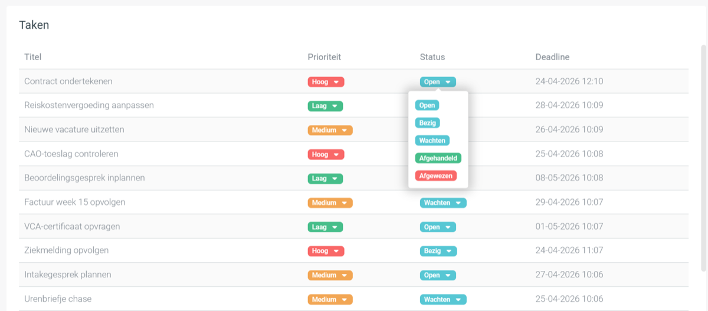

Easyflex
Stage · feb tot jun 2026 · OosterhoutEen modulair, instelbaar dashboard voor easyflex2go, de webapplicatie waarmee medewerkers van uitzendbureaus werken.

- Doel
Gebruikers kiezen zelf welke blokken ze op hun dashboard zien en in welke volgorde, en kunnen vanuit een blok direct iets doen. Mijn hoofdvraag: hoe ontwerp en bouw je zo'n dashboard, zodat gebruikers sneller bij hun informatie komen en er direct op kunnen handelen?
- Mijn rol
Full-stack developer in het Scrum-team. Ik deed het gebruikersonderzoek, verfijnde samen met de product owner 12 user stories met acceptatiecriteria en bouwde ze zelf, van back end tot front end.
- Aanpak en keuzes
-
- Onderzocht wat gebruikers op hun dashboard nodig hebben: drie interviews (twee consultants van Easyflex en een externe klant), een analyse van het huidige dashboard en een poll tijdens een klantwebinar.
- Keuze: één lijst-element met een instelbaar type, in plaats van een apart bloktype per lijst. Daardoor zijn nieuwe lijsten, zoals een lijst met flexwerkers, snel te maken en blijft de look gelijk.
- De keuzes vastgelegd in een technisch ontwerp met C4-model (een standaardmanier om architectuur in lagen te tekenen) en zes architectuurbeslissingen (ADR's).
- Getest met PHPUnit, Vitest en Playwright. Gewerkt in Scrum met Jira en een feature branch per ticket. Elk ticket ging eerst door code review en daarna naar het QA-team, dat het testte tegen de acceptatiecriteria. De code volgde de vaste PHP-standaarden (PSR).
- Uitdaging en oplossing
-
- Bij mijn stories gingen de QA-bevindingen vooral over gedrag dat gebruikers uit de rest van de applicatie kennen. In de flexwerkerslijst moest de status bijvoorbeeld als badge verschijnen, net als in het flexwerkersoverzicht, en moest een ingestelde filter meegaan naar ‘Bekijk alle flexwerkers’.
- Tijdens het bouwen van de flexwerkerslijst vielen de kolomkoppen van de lijstblokken over het instellingenpaneel heen. Oorzaak: de vastgezette (sticky) kolomkoppen kregen van Bootstrap een
z-indexvan 1020, hoger dan het paneel. Met eenz-indexvan 1 blijven ze boven hun eigen tabel en onder het paneel. Ik loste het op in dezelfde sprint en de bugfix ging live in release 4.33. De flexwerkerslijst zelf stond aan het eind van mijn stage nog in code review.
- Resultaat
-
Stage afgesloten met een 10. Bij de eindpresentatie in juni 2026 draaide het dashboard in productie.
- Van de 12 user stories waren er aan het eind 3 door het QA-team goedgekeurd en live: het lijst-element (release 4.30), het takenoverzicht (release 4.31) en de filters op het takenblok. Daarnaast ging mijn bugfix voor de kolomkoppen live in release 4.33.
- Van de overige stories lagen er 4 bij het QA-team en 4 in code review; twee daarvan kwamen pas in week 16 bij de scope. Eén story, een herontwerp van de lay-out, haalde de product owner uit de scope.
De antwoorden op de vier deelvragen:
- Wat gebruikers nodig hebben: een compact dashboard met directe acties en eigen instellingen. Taken, ziekmeldingen en plaatsingen zonder uren kwamen het sterkst naar voren; in de webinarpoll koos 8 van de 14 klanten ziekmeldingen.
- Hoe de blokken eruitzien: kaarten op een vast grid, met kleur voor urgentie en directe acties, goedgekeurd door de product owner.
- Hoe je de instellingen veilig opslaat: in de bestaande MySQL-tabellen
dashboards(het persoonlijke dashboard van een gebruiker) endashboard_blocks(een rij per blok, met de blokinstellingen als JSON), via Laravel-endpoints met autorisatie. - Of het voldoet aan de kwaliteitseisen: ja, de kern is door het QA-team goedgekeurd, met 168 geautomatiseerde tests die ik schreef (35 PHPUnit, 133 Vitest) en statische analyse in de pipeline.
- Reflectie
Na mijn eerste interview merkte ik dat ik sneller had moeten doorvragen naar concrete voorbeelden. Voor de volgende interviews bereidde ik per onderwerp doorvraagvragen voor. Verder leerde ik werken in een gedeelde productiecodebase, waar elke wijziging door review en QA gaat, en wensen kritisch te filteren voordat ze een user story worden.
- Technieken
- Laravel · PHP · MySQL · Vue.js · TypeScript · Docker · Figma · Jira · PHPUnit · Vitest · Playwright · Scrum
- Code
De code en de ontwerpdocumenten (het C4-model en de ADR's) zijn eigendom van Easyflex en niet openbaar. In een gesprek loop ik mijn merge requests en ontwerpkeuzes graag met je door.